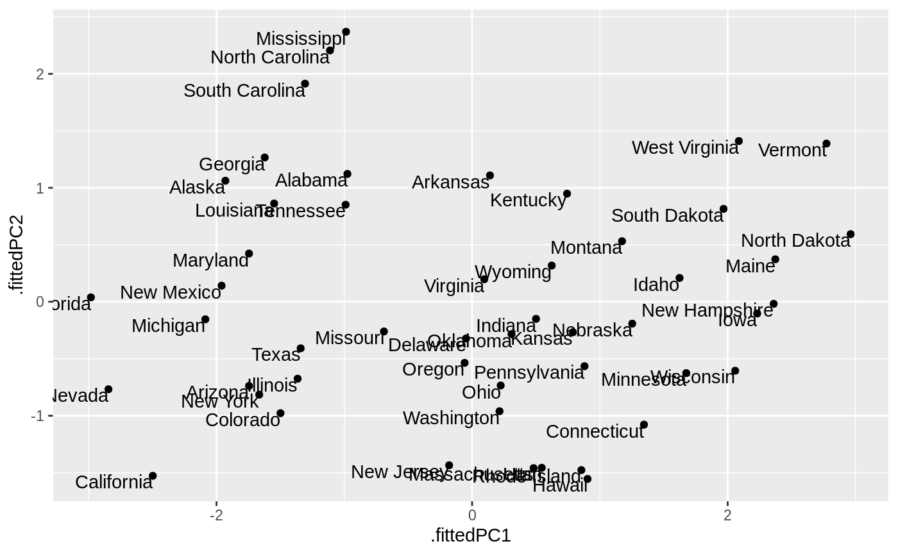

Tidy summarizes information about the components of a model. A model component might be a single term in a regression, a single hypothesis, a cluster, or a class. Exactly what tidy considers to be a model component varies cross models but is usually self-evident. If a model has several distinct types of components, you will need to specify which components to return.
# S3 method for prcomp tidy(x, matrix = "u", ...)
| x | A |
|---|---|
| matrix | Character specifying which component of the PCA should be tidied.
|
| ... | Additional arguments. Not used. Needed to match generic
signature only. Cautionary note: Misspelled arguments will be
absorbed in |
A tibble::tibble with columns depending on the component of PCA being tidied.
If matrix is "u", "samples", or "x" each row in the tidied
output corresponds to the original data in PCA space. The columns are:
rowID of the original observation (i.e. rowname from original data).
PCInteger indicating a principle component.
valueThe score of the observation for that particular principle component. That is, the location of the observation in PCA space.
rowThe variable labels (colnames) of the data set on which PCA was performed
PCAn integer vector indicating the principal component
valueThe value of the eigenvector (axis score) on the indicated principal component
PCAn integer vector indicating the principal component
std.devStandard deviation explained by this PC
percentPercentage of variation explained
cumulativeCumulative percentage of variation explained
See https://stats.stackexchange.com/questions/134282/relationship-between-svd-and-pca-how-to-use-svd-to-perform-pca for information on how to interpret the various tidied matrices. Note that SVD is only equivalent to PCA on centered data.
Other svd tidiers: augment.prcomp,
tidy_irlba, tidy_svd
#> # A tibble: 200 x 3 #> row PC value #> <fct> <dbl> <dbl> #> 1 Alabama 1 -0.976 #> 2 Alaska 1 -1.93 #> 3 Arizona 1 -1.75 #> 4 Arkansas 1 0.140 #> 5 California 1 -2.50 #> 6 Colorado 1 -1.50 #> 7 Connecticut 1 1.34 #> 8 Delaware 1 -0.0472 #> 9 Florida 1 -2.98 #> 10 Georgia 1 -1.62 #> # … with 190 more rows#> # A tibble: 200 x 3 #> row PC value #> <fct> <dbl> <dbl> #> 1 Alabama 1 -0.976 #> 2 Alaska 1 -1.93 #> 3 Arizona 1 -1.75 #> 4 Arkansas 1 0.140 #> 5 California 1 -2.50 #> 6 Colorado 1 -1.50 #> 7 Connecticut 1 1.34 #> 8 Delaware 1 -0.0472 #> 9 Florida 1 -2.98 #> 10 Georgia 1 -1.62 #> # … with 190 more rows#> # A tibble: 4 x 4 #> PC std.dev percent cumulative #> <dbl> <dbl> <dbl> <dbl> #> 1 1 1.57 0.620 0.620 #> 2 2 0.995 0.247 0.868 #> 3 3 0.597 0.0891 0.957 #> 4 4 0.416 0.0434 1# state map library(dplyr) library(ggplot2) pc %>% tidy(matrix = "samples") %>% mutate(region = tolower(row)) %>% inner_join(map_data("state"), by = "region") %>% ggplot(aes(long, lat, group = group, fill = value)) + geom_polygon() + facet_wrap(~ PC) + theme_void() + ggtitle("Principal components of arrest data")#> Error: Package `maps` required for `map_data`. #> Please install and try again.#> # A tibble: 50 x 9 #> .rownames Murder Assault UrbanPop Rape .fittedPC1 .fittedPC2 .fittedPC3 #> <fct> <dbl> <int> <int> <dbl> <dbl> <dbl> <dbl> #> 1 Alabama 13.2 236 58 21.2 -0.976 1.12 -0.440 #> 2 Alaska 10 263 48 44.5 -1.93 1.06 2.02 #> 3 Arizona 8.1 294 80 31 -1.75 -0.738 0.0542 #> 4 Arkansas 8.8 190 50 19.5 0.140 1.11 0.113 #> 5 Californ… 9 276 91 40.6 -2.50 -1.53 0.593 #> 6 Colorado 7.9 204 78 38.7 -1.50 -0.978 1.08 #> 7 Connecti… 3.3 110 77 11.1 1.34 -1.08 -0.637 #> 8 Delaware 5.9 238 72 15.8 -0.0472 -0.322 -0.711 #> 9 Florida 15.4 335 80 31.9 -2.98 0.0388 -0.571 #> 10 Georgia 17.4 211 60 25.8 -1.62 1.27 -0.339 #> # … with 40 more rows, and 1 more variable: .fittedPC4 <dbl>ggplot(au, aes(.fittedPC1, .fittedPC2)) + geom_point() + geom_text(aes(label = .rownames), vjust = 1, hjust = 1)